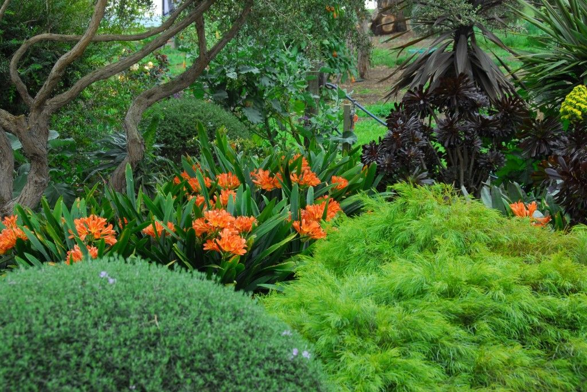
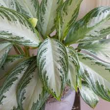
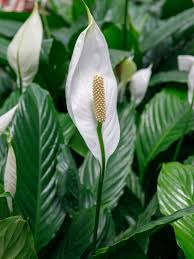

 Shade Garden Garden with bright flowers and leaves. Enjoy the greenry and the bright sunlight and soulfull environment. Read More
Baby Plant Plant trees and and make mother earth beautiful. Each one Plant one. Tree-planting is the process of transplanting tree seedlings, generally for forestry, land reclamation, or landscaping purpose. Here's how
Leaves Leaves are the main sites for photosynthesis: the process by which plants synthesize food. Most leaves are usually green, due to the presence of chlorophyll in the leaf cells. Read more
Spider Plant The spider plant (Chlorophytum comosum) is considered one of the most adaptable of houseplants and the easiest to grow. Read More..
 Leafy Tales A leaf is the principal lateral appendage of the vascular plant stem, usually borne above ground and specialized for photosynthesis. Here's why
 White Dhalia White flowering dahlias are easy to have in any style of garden since white goes with everything. Stop here